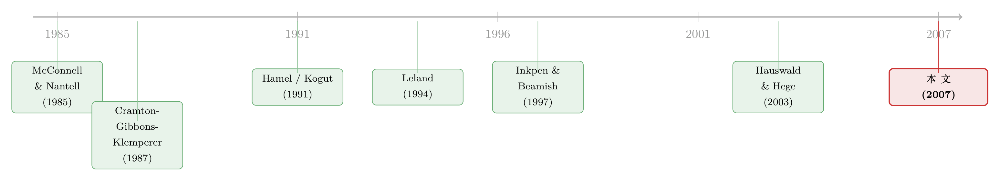

合资这场「联姻」，为什么从一开始就注定要散？
本文读的是 Habib & Mella-Barral (2007, Review of Financial Studies)：两家公司组建合资企业 (joint venture, JV)，本是为了把彼此的「知识技能 (knowhow)」凑到一起。但作者证明，正是「凑在一起干」这件事本身，让每一方都偷偷学走了对方的本事；一旦学得差不多，合资就再无必要——于是每一桩合资从签字那天起，就注定终有一天会被拆散。更妙的是，拆散不是失败，恰恰可能是「学成出师」的标志。
1 一个统计数字背后的悖论
先看一组数字。Dyer, Kale, and Singh (2004) 统计，1996–2001 年这六年间，美国公司一共宣布了 57,000 桩联盟 (alliance)——作为对比，同期的并购是 74,000 桩。联盟数量与并购几乎平起平坐。而在这些联盟里，但凡有一小部分是股权式的合资企业，绝对数量就已经相当可观。
可问题来了：Bleeke and Ernst (1995) 说，这些合资企业里的大多数，最终都会被解散。Kogut (1991) 追踪了 1975–1983 年间成立的 92 家合资企业，到他写作时（约九年后），其中 27 家被清算、37 家被某一方收购——64 桩解散案例，接近成立总数的 70%。Hauswald and Hege (2003) 的样本更精细：1985–2000 年间终止的 151 家美国合资企业中，92 家（61%）以一方完全买断另一方告终，7 家（5%）被第三方收购，52 家（34%）被清算。
把这两件事摆在一起，悖论就出现了：人们成群结队地组建合资企业，又成群结队地把它们拆掉。如果合资是个好主意，为什么大家都急着散伙？如果它是个坏主意，为什么大家又一窝蜂地往里钻？
传统的解释往往是「合作失败了」——两家公司性格不合、文化冲突、貌合神离。Reich and Mankin (1986) 当年甚至痛心疾首地说，「与日本合资，等于把我们的未来拱手送人」。Hamel (1991) 进一步提出了「学习竞赛 (learning races)」的概念：合资双方都明白，谁学得快、谁的本事大，谁在将来的谈判桌上就更有筹码；于是大家一边藏着自己的看家本领（降低「透明度」），一边拼命去偷师对方（提高「接受度」）。在这种叙事里，合资是一场暗流涌动的零和博弈，解散是博弈失败的残骸。
本文要做的，是把这套「失败叙事」彻底翻过来。
2 核心一招：把「合并」与「获取」分开
作者抓住的，是一个被以往文献含混带过、却至关重要的区分：
- 知识的合并 (combination of knowhow)：两家公司凑在一起，能干成单独一家干不成的事——交叉销售、更高效的生产工艺。这增加的是「合资期间双方能共同支配的本事」。
- 知识的获取 (acquisition of knowhow)：在朝夕相处的联合运营里，每一方都在悄悄学会对方原本独有的本事。这增加的是「将来一旦散伙、各自单干时各自手里的本事」。
这个区分是全文的发动机。组建合资的理由，是为了「合并」；而拆散合资的理由，恰恰是「获取」。同一段共同经营的时光，一边带来了合并的好处，一边又埋下了散伙的种子。
顺着这条线，一个自然的问题是：既然在一起能「合并」出额外的价值，为什么这价值会消失？答案是：它不会凭空消失，而是被「获取」一点一点蚕食掉。每一方的本事都在增长，于是「单干」的能力越来越强；相对地，「非得凑在一起才能干」的那部分增量好处，就越来越小，最终归零。而联合经营的成本却纹丝不动。当好处跌到成本之下，散伙的时刻就到了。
这就引出了本文最干净的一个结论：每一桩合资都是暂时的——不存在「永远」的合资，总有一个时点，它会被解散。
3 模型：把这套直觉写成方程
这是一篇彻头彻尾的理论论文，核心机制全藏在几个方程里。我们一步一步来。
3.1 单干 vs. 合干的收入
设两家公司 \(a\)、\(b\) 和一项资产。若由公司 \(i\) 单独经营，瞬时收入为
$$ R\big(e_i, k_i(t)\big) = e_i^{\,\alpha}\, k_i(t)^{\,1-\alpha}, $$
其中 \(e_i\) 是公司 \(i\) 投入资产的资源（比如工程师、科学家），\(k_i(t)\) 是它在 \(t\) 时刻的知识技能，\(\alpha\in(0,1)\) 衡量「资源」相对于「知识」的重要性。投入资源的成本是线性的：
$$ C(e_i) = \omega_i\, e_i, $$
\(\omega_i\) 是公司 \(i\) 每单位资源的成本（机会成本）。这里 \(\omega_i\) 的高低，就是后文反复出现的「高成本方 / 低成本方」之别。
若两家联合经营，瞬时收入变为
$$ R_J(e) = s(e)^{\,\alpha}\, \bar{k}^{\,1-\alpha}, \qquad s(e) = \big(\eta_a^{-\eta_a}\,\eta_b^{-\eta_b}\big)\, e_a^{\,\eta_a}\, e_b^{\,\eta_b}. $$
这里 \(e=(e_a,e_b)\) 是两方各自投入的资源，\(\eta_i\in(0,1)\) 是各自贡献的权重，\(\eta_a+\eta_b=1\)；\(\bar{k}\) 是两方合并后的知识，满足 \(\bar{k}\le k_a(0)+k_b(0)\)（取等号意味着初始知识毫无重叠，严格小于则有重叠）。那个看起来古怪的系数 \(\eta_a^{-\eta_a}\eta_b^{-\eta_b}\) 是个归一化项，保证只有当两方的知识不一样时，合并才真正增加收入——若双方知识完全相同，联合与单干的收入就没有差别。
3.2 发动机：学习函数
现在是全文的心脏。一家公司的知识是初始禀赋加上在合资期间学到的部分：
$$ k_i(t) = k_i(0) + g_i(t). $$
而这个「学到的增量」\(g_i(t)\)，作者用一个满足七条性质（知识不减、连续、初始为零、上限为 \(\bar{k}-k_i(0)\)、由随机的学习环境驱动、随获取难易而变、单干时不增长）的简洁函数来刻画：
这里的 \(x(t)\) 不是普通的随机过程，而是一个历史最大值：
$$ x(t) = \max_{\tau\in T_J(t)}\big\{y(\tau)\big\}, $$
\(T_J(t)\) 是到 \(t\) 时刻为止合资企业已经运营的全部时间，而 \(y(t)\) 是一个向上漂移的几何布朗运动 (geometric Brownian motion)：
$$ dy(t) = \mu\, y(t)\, dt + \sigma\, y(t)\, dB(t), \qquad y(0)=1. $$
为什么要取「历史最大值」这么一个绕的设定？因为它一举锁死了那七条性质里最关键的两条：知识只增不减（最大值不会回落，所以学到的本事不会忘）、以及单干时不增长（约定 \(y(t)\) 在单干期间冻结，于是 \(x(t)\) 不动，\(g_i(t)\) 也不动）。直觉上，公司在共同经营里时不时撞上一个「学习的好窗口」（\(y\) 创新高），就把本事往上推一格，从此再不退回；没撞上的日子里，本事原地踏步。
注意 \(f_i\) 这个参数：它衡量的是「公司 \(i\) 学对方本事的难易」，而不是它自己本事的多少。后面会看到，正是 \(f_i\)（学得快不快）和 \(\omega_i\)（成本高不高）这两个互相独立的维度，共同决定了散伙时是谁买下谁。
3.3 还有一个外生的「天灾」
最后，资产随时可能因一次外生冲击（比如一项颠覆性新技术问世，让这项资产、资源、知识统统作废）而清算。作者把清算时点 \(\tilde{t}\) 建模为一个强度恒定为 \(\lambda\) 的停时——任意时刻 \(t\)，在 \(t+dt\) 前被清算的概率约为 \(\lambda\,dt\)。这个技巧借自可违约债券的定价文献（Artzner & Delbaen 1989; Lando 1994; Jarrow & Turnbull 1995），它让整套连续时间的估值得以写出闭式解。
4 反转一：散伙时，到底是谁买下谁？
模型搭好后，第一个真正有趣的问题是：合资解散时，由谁买断对方、独自经营这项资产？直觉会说「当然是低成本那一方」——毕竟它运营更便宜。但作者发现，答案取决于有没有双重道德风险 (double moral hazard)。
所谓双重道德风险，是说每一方只关心自己那份股权的价值，而不是整个合资企业的价值，于是各自的资源投入都低于「假如独自经营时」的水平。这是联合经营的第一项成本。第二项成本则来自双方成本的差异：让高成本方也掺一脚地投入资源，本身就是种浪费。
- 无道德风险时，作者证明：散伙时的「更优经营者」永远是低成本方。道理很干脆——若让高成本方买断，所有资源都得由它一家来出，成本劣势被放大而非缓解；所以合资绝不会在「低成本方还没成为更优经营者」之前解散。
- 有道德风险时，结论翻转：更优经营者不一定是低成本方，可能是高成本方。因为道德风险的成本可能高到必须提前散伙的地步，而由高成本方买断虽然加重了成本差异的负担，却消除了道德风险（独自经营，没有「双重」了）。
这就把一个看似纯财务的问题，和合资的存续时间钉在了一起：高成本方要想成为买家，它的高成本必须被它更高的知识所补偿——而这只在合资刚成立不久、低成本方还没把对方的本事学个七七八八的时候才可能。换句话说，短命的合资里更可能由高成本方买断，长寿的合资里几乎一定由低成本方买断。买家身份和存续时间，是同一枚硬币的两面。
5 反转二：根本没有「学习竞赛」
现在轮到本文最反直觉、也最漂亮的一击。
Hamel (1991) 以降的整条文献都担心「学习竞赛」：双方为了在散伙谈判里占上风，会拼命抢着学、藏着教。可作者发现，在最优合约下，学习竞赛根本不会发生。
为什么？设想低成本方买断高成本方的情形。这桩合资，其实可以理解成「高成本方把自己的本事传授给低成本方，好让低成本方用它那更低的成本去发扬光大」。关键在于——高成本方被买断时拿到的价钱，既反映了低成本方的成本优势，也反映了它从高成本方那里学到的本事。换句话说，高成本方教得越多，将来被买断的价码越高。于是它主动有动力去倾囊相授，而不是藏着掖着。
学习竞赛之所以是坏事，是因为「为了改善谈判地位而学习」会降低双方的联合收益——这是一种纯粹的内耗。作者的办法是设计一份让散伙条款「抗重新谈判 (renegotiation-proof)」的最优退出合约，从根上掐死了内耗的动机。
这份退出合约，长得很像博弈论里经典的「切蛋糕机制 (cake-cutting mechanism)」：一方报出一个价格，另一方可以选择「按这个价买下报价方」或者「按这个价卖给报价方」。报价方因为不知道自己会当买家还是卖家，就只能报一个公道价。这个机制可以追溯到合伙拆伙的经典理论（Cramton, Gibbons, and Klemperer 1987）。
这个「无学习竞赛」的结论，乍看与 Hamel 等人的担忧背道而驰，却恰好与 Hennart, Roehl, and Zietlow (1999) 的经验发现一致——后者用美日合资的数据质疑了学习竞赛到底是否真实存在。合资合约里那些被反复强调的退出条款，也许正是为了避免学习竞赛而生的。
6 一个现实的注脚：BMW 与劳斯莱斯
理论讲完，作者举了一个恰到好处的例子：BMW 与劳斯莱斯（这里指造航空发动机的劳斯莱斯，不是造车的）的航空发动机合资。这桩合资持续了 10 年，于 1999 年以劳斯莱斯买断 BMW 告终——BMW 拿到的是劳斯莱斯的股票，从此成了后者最大的股东之一，持股约 10%。
按「失败叙事」，这是一次散伙；但按本文的逻辑，这恰恰是成功。劳斯莱斯早年停掉了小型航空发动机业务，想重新杀回去，于是借 BMW 的小型发动机本事来学；BMW 愿意教，是因为合资给了它一条额外的变现渠道。一旦劳斯莱斯学够了，合资就完成了它的使命。而买家为什么是劳斯莱斯而非 BMW？因为劳斯莱斯是航空发动机公司，BMW 是汽车公司——运营一项小型航空发动机业务，劳斯莱斯的成本本就远低于 BMW。低成本方买断高成本方，与模型预测分毫不差。
7 文献脉络
把这条线索捋一捋，能看清本文站在哪里。
最早，合资文献是静态的、且偏经验：McConnell and Nantell (1985) 用事件研究发现合资公告能给股东带来正收益，并整理出「获取技能与技术 knowhow」高居合资动机榜首。接着，Kogut (1989, 1991) 把合资看成一份「期权」——前者把存续率与维持合谋的能力挂钩，后者把合资视作一个「扩张并收购」的期权，行业景气改善会提高期权的「价内程度」，诱使持有方行权买断对方。再往后，Hamel (1991) 抛出「学习竞赛」，引爆了一整波关于合资「稳定性」的讨论（Inkpen and Beamish 1997 等）。但这些工作大多没有正式的学习模型，难以导出可检验的精确含义；而且像 Inkpen and Beamish (1997) 那样，往往先验地假定学习只利于外方。

本文做的，是把这条线从「静态、含混」推进到「连续时间、内生」：它不预设谁会胜出，而是从模型的基本面里解出买家身份。在方法上，它接续了把连续时间技术引入公司金融的那一脉——结构式信用风险与资本结构（Leland 1994; Mella-Barral and Perraudin 1997; Mella-Barral 1999），并进一步扩展到风险投资定价（Berk, Green, and Naik 2004）、并购动态（Morellec and Zhdanov 2005; Lambrecht 2004）。本文则把这套连续时间的「期权 + 最优停时」机器，第一次用到了合资的动态演化上。退出机制那一头，它又接上了合伙拆伙的机制设计文献（Cramton, Gibbons, and Klemperer 1987; McAfee 1992）。
关于「散伙/拆分不必然是失败」这个母题，本博客读过一篇思路相通的文章——一桩并购之后的剥离，可能正是协同价值兑现完毕的标志（参见《音乐停了，谁还在跳舞？》 的相邻讨论，以及关于战略联盟伙伴风险传染的《你的合伙人破产了，你会不会跟着一起垮？》）。而关于「提前安排股权、为将来的买断谈判埋伏笔」，可对照《一笔提前卖出的股权，是为了让你将来「抢着加价」》。
8 评论与延伸（Q&A + 研究方向）
(a) 几个可能的疑问
Q：「知识合并」和「知识获取」到底差在哪？为什么这个区分这么重要？
合并指的是「在一起干，能干成单独一家干不成的事」，它抬高的是合资存续期间双方共同能支配的本事 \(\bar{k}\)；获取指的是「在一起干的过程中，我把你的独门本事学走了」，它抬高的是散伙之后各自单干时手里的 \(k_i\)。前者是组建合资的理由，后者是拆散合资的理由。少了这个区分，就会把「合资终结」一律读成失败；有了它，终结反而可能是知识转移大功告成的标志。
Q：「每一桩合资都注定解散」这个结论，会不会太强了？
在模型设定下它是必然的：合并带来的相对好处会被学习一点点吃光直至归零，而联合经营的成本（道德风险 + 成本差异）恒定不变，于是好处迟早跌破成本。但这依赖两个关键假设——学习不可逆且单调、以及成本不随学习而降。现实里若知识会折旧、或市场需求持续增长把「合并好处」不断顶高，结论就可能松动。所以它更像一个「其他条件不变」下的基准命题，而非铁律。
Q：为什么散伙的买家可能是高成本方？这不是反效率吗？
因为有两种成本在打架。让高成本方买断，会放大「成本差异」这项损失（资源全由它一家来出）；但同时消除了「双重道德风险」。当道德风险的成本大到必须提前散伙，而此时低成本方又还没把对方的本事学够，那么由学得多、知识高的高成本方接手，反而是次优里的最优。效率是在两害相权中取的。
Q：「没有学习竞赛」凭什么成立？现实里大家不是都防着对方吗？
关键是价格。被买断方教得越多，它在「切蛋糕」式退出合约里拿到的价码越高，因为这个价码同时反映了它传授的知识。于是教学不是「资敌」，而是「给自己将来的卖价加码」。只有当退出条款可被重新谈判时，双方才会为抢谈判地位而内耗式地学习；本文设计的抗重新谈判合约把这条路堵死了，竞赛也就无从谈起。
Q：把清算建模成「恒定强度的停时」，是不是太省事了？
这是从可违约债券定价借来的简化（强度 \(\lambda\) 恒定），好处是能写出闭式解。代价是它假定「天灾」的到来与合资内部状态无关、强度也不随时间变化。如果颠覆性技术的到来本身与行业景气、与合资学到的东西相关，\(\lambda\) 就该内生化——那会让模型更真实，也更难解。
Q：这套理论能不能搬到国际合资、尤其是外资进入的场景？
能，而且很自然。Inkpen and Beamish (1997) 研究的正是外方与本地伙伴的国际合资，只不过它假定学习偏向外方。本文不做这种假定，而是让买家身份由 \(f_i\)（学习难易）和 \(\omega_i\)（成本）内生决定。把它放到「外资持有人 + 本地伙伴」的框架里，就能问：到底是外资学走了本地的本事，还是本地学走了外资的？答案取决于谁学得快、谁的运营成本低，而非先验的国籍。
(b) 几个可能的研究问题与提案
1. 合资买家身份 → 信用利差的预测
【经济故事】本文预言：短命合资更可能由高成本方买断，长寿合资几乎一定由低成本方买断。若买断方需要举债融资，那么「买家身份 × 存续时间」就应当系统性地预测买断后实体的杠杆与信用利差——低成本方接手的，违约风险应更低。
【可行性】中。需要把 Hauswald and Hege (2003) 那类合资终止样本，与买断方的债券/CDS 数据（如 TRACE、Markit）匹配。难点在于识别「谁是高/低成本方」——可用买断前各自的营业利润率代理。识别上是相关性而非因果，但作为一组「模型含义检验」是 doable 的。
2. 退出条款的存在 → 合资存续与解散方式
【经济故事】本文说，最优退出合约（切蛋糕式）通过「抗重新谈判」来消灭学习竞赛。一个可检验的含义是：写入了明确退出条款（看跌/看涨期权、切蛋糕、拖售/随售权）的合资，应当更少「不欢而散」（清算），更多「干净买断」，且存续时间的分布也不同。
【可行性】中。需要手工整理合资合约文本里的退出条款（SEC 文件、合资协议附件），构造条款指标，再看它与解散方式（买断 vs. 清算）的关系。数据采集成本高，识别上有合约内生选择问题，但样本若够大、能用行业/年份固定效应缓解，仍可一做。
3. 知识不可逆假设的检验：合资散伙后，谁的生产率真的涨了？
【经济故事】模型的发动机是「学习单调不可逆」。若它成立，合资散伙后，买断方（尤其是学得快、\(f_i\) 高的一方）的全要素生产率或专利产出应出现持续上升，而非昙花一现。
【可行性】高。用合资终止事件作为时点，比较买断方在散伙前后的专利、TFP、新产品发布（Compustat + 专利数据库 + 事件研究），做交错双重差分。挑战是合资终止是内生的；可用本文给出的「外生天灾」类冲击（如颠覆性技术问世）作为工具或异质性来源。这与本博客读过的《被「偷走」的增长》 思路相通。
4. 把清算强度 \(\lambda\) 内生化为行业景气
【经济故事】本文把清算当成恒定强度的外生停时。但现实中，颠覆性技术或需求崩塌的概率，明显随行业周期起伏。把 \(\lambda\) 写成行业状态变量的函数，就能问：景气下行是否系统性地缩短合资寿命、并改变买家身份？
【可行性】中。纯理论扩展 doable（代价是闭式解可能丢失，需数值求解）；经验检验则需用行业层面的技术冲击或需求冲击数据。属于「站在本文肩上再走一步」的稳妥选题。
9 我的判断
这篇论文最漂亮的地方，是用一个极简的「合并 vs. 获取」二分法，把合资文献里两件长期割裂的事——为什么组建与为什么解散——缝进了同一个动态框架，并且不靠任何先验假设就内生地解出了买家身份和存续时间。把连续时间「期权 + 最优停时」那套结构式机器搬到合资上，是干净利落的方法论贡献；而「学习竞赛在最优合约下不存在」更是一个既反直觉、又与经验证据吻合的惊喜。
要说担忧，主要在两处。其一，结论高度依赖「学习单调不可逆、成本不随学习而降」这两条假设——它们让「合资必然解散」成为铁律，但现实里知识会折旧、协同会随规模升级，一旦放松，核心命题就未必稳健。其二，这是一篇纯理论论文，第 9 节给出的经验证据（Kogut 1991; Hauswald and Hege 2003）只是「与模型一致」的描述性吻合，并没有真正去检验那些精确的比较静态——比如「短命合资更多由高成本方买断」这条最锋利的预言，至今还停留在纸面上。
我最想看到的后续，是有人真的去把合资终止样本和买断方的财务/信用数据接起来，验证那条「买家身份 × 存续时间」的预言；以及把这套框架挪到外资进入的国际合资场景里，去回答那个老问题——到底是谁学走了谁。
参考文献
- Artzner, P., and F. Delbaen (1989). Term Structure of Interest Rates: The Martingale Approach. Advances in Applied Mathematics 10, 95–129.
- Berg, S. V., and P. Friedman (1977). Joint Ventures, Competition, and Technological Complementarities: Evidence from Chemicals. Southern Economic Journal 43, 1330–1337.
- Berk, J. B., R. C. Green, and V. Naik (2004). Valuation and Return Dynamics of New Ventures. Review of Financial Studies 17, 1–35.
- Bhattacharyya, S., and F. Lafontaine (1995). Double-Sided Moral Hazard and the Nature of Share Contracts. Rand Journal of Economics 26, 761–781.
- Bleeke, J., and D. Ernst (1995). Is Your Strategic Alliance Really a Sale? Harvard Business Review, January–February, 97–105.
- Cramton, P., R. Gibbons, and P. Klemperer (1987). Dissolving a Partnership Efficiently. Econometrica 55, 615–632.
- Dyer, J. H., P. Kale, and H. Singh (2004). When to Ally and When to Acquire. Harvard Business Review, July–August, 109–115.
- Habib, M. A., and P. Mella-Barral (2007). The Role of Knowhow Acquisition in the Formation and Duration of Joint Ventures. Review of Financial Studies 20(1), 189–233.
- Hamel, G. (1991). Competition for Competence and Interpartner Learning within International Strategic Alliances. Strategic Management Journal 12, 83–103.
- Hauswald, R., and U. Hege (2003). Ownership and Control in Joint Ventures: Theory and Evidence. Working Paper, HEC Paris.
- Hennart, J.-F., T. Roehl, and D. S. Zietlow (1999). 'Trojan Horse' or 'Workhorse'? The Evolution of U.S.–Japanese Joint Ventures in the United States. Strategic Management Journal 20, 15–29.
- Inkpen, A. C., and P. W. Beamish (1997). Knowledge, Bargaining Power and the Instability of International Joint Ventures. Academy of Management Review 22, 177–202.
- Jarrow, R. A., and S. M. Turnbull (1995). Pricing Derivatives on Financial Securities Subject to Credit Risk. Journal of Finance 50, 53–85.
- Kogut, B. (1989). The Stability of Joint Ventures: Reciprocity and Competitive Rivalry. Journal of Industrial Economics 38, 183–198.
- Kogut, B. (1991). Joint Ventures and the Option to Expand and Acquire. Management Science 37, 19–33.
- Lambrecht, B. M. (2004). The Timing and Terms of Mergers Motivated by Economies of Scale. Journal of Financial Economics 72, 41–62.
- Lando, D. (1994). Three Essays on Contingent Claims Pricing. Ph.D. Thesis, Cornell University.
- Leland, H. E. (1994). Risky Debt, Bond Covenants and Optimal Capital Structure. Journal of Finance 49, 1213–1252.
- McAfee, R. P. (1992). Amicable Divorce: Dissolving a Partnership with Simple Mechanisms. Journal of Economic Theory 56, 266–293.
- McConnell, J. J., and T. J. Nantell (1985). Corporate Combinations and Common Stock Returns: The Case of Joint Ventures. Journal of Finance 40, 519–536.
- Mella-Barral, P. (1999). The Dynamics of Default and Debt Reorganization. Review of Financial Studies 12, 535–578.
- Mella-Barral, P., and W. R. M. Perraudin (1997). Strategic Debt Service. Journal of Finance 52, 531–556.
- Morellec, E., and A. Zhdanov (2005). The Dynamics of Mergers and Acquisitions. Journal of Financial Economics 77, 649–672.